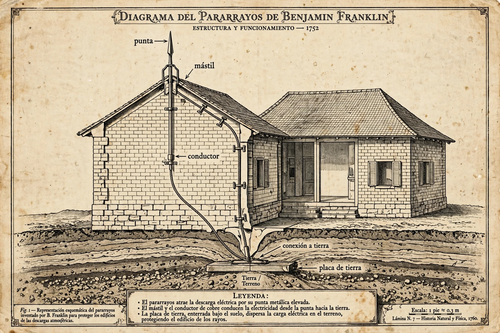

El Pararrayos
El Invento que Protegió al Mundo
Como consecuencia directa de su famoso experimento con la cometa, Benjamín Franklin inventó el pararrayos en 1753. Se dio cuenta de que las puntas metálicas afiladas podían atraer y descargar la electricidad de las nubes de tormenta de forma silenciosa. Al colocar una larga barra de hierro en el tejado de los edificios y conectarla mediante cables al suelo, logró que los rayos fueran conducidos de manera segura hacia la tierra sin dañar las estructuras ni causar incendios. Este invento revolucionario salvó incontables vidas y edificaciones en todo el mundo, convirtiéndolo en un héroe de la ingeniería urbana.
